Sistem operasi internal yang menjalankan seluruh siklus kemitraan B2B Kitabisa — dari lead yang masuk, sampai rupiah yang dipertanggungjawabkan.
Techford adalah platform internal tim B2B Kitabisa. Ia memegang satu rantai kerja yang sebelumnya tersebar di belasan spreadsheet: lead inbound ditriase, diubah jadi klien, klien melahirkan proyek, proyek menghasilkan dokumen komersial dan perhitungan biaya, lalu realisasi dananya direkonsiliasi kembali ke angka yang diklaim.
Yang membuatnya bukan sekadar CRM: di dalamnya ada mesin perhitungan uang. Dokumen COR (Cost Operational Report) menghitung berapa dana yang benar-benar bisa dipakai setelah platform fee, tech fee, fee lembaga penyalur, PPN, dan PPh — lalu memisahkan mana margin rencana dan mana profit aktual. Salah satu digit di sini artinya salah hitung uang nyata, dan angkanya dipakai untuk mengambil keputusan pencairan.
Dokumen ini merangkum dua hal: produk yang sudah berjalan (versi Google Apps Script, ±8 bulan di produksi, 187 kali deploy), dan rekayasa ulangnya ke stack modern setelah platform lama menabrak batas keras infrastrukturnya.
Sebelum Techford, proses ini hidup di spreadsheet manual: nomor dokumen ditulis tangan, rumus COR disalin antar-file, status proyek hanya diketahui orang yang mengerjakannya, dan tidak ada jejak siapa mengubah apa. Techford memindahkan semuanya ke satu alur yang punya nomor urut otomatis, state machine, approval berjenjang, dan audit trail.
Platform versi pertama memakai Google Sheets sebagai database. Pada 21 Agustus 2026 hampir semua halaman berhenti memuat data — bukan karena bug, melainkan batas rate limit di level infrastruktur Google. Itu titik yang memang sudah diperkirakan sejak awal, hanya datang lebih cepat.
Yang dipindahkan bukan 39.000 baris kode lama, melainkan ±7.500 baris aturan bisnis yang sudah tervalidasi pemakaian nyata — ditulis ulang di atas fondasi tanpa batas-batas tadi, dan diuji ulang angkanya sebelum dipercaya.
Techford v1 dibangun di atas Google Apps Script dengan Google Sheets sebagai penyimpanan. Pilihan itu tepat di awal: gratis, langsung terintegrasi dengan cara kerja tim, dan bisa dirilis cepat. Arsitekturnya bahkan sudah mengantisipasi kapan harus pindah — lapisan repository sengaja diisolasi supaya migrasi tidak menyentuh logika bisnis.
Yang tidak bisa direkayasa adalah batas platformnya. Google Sheets tidak punya index: setiap kali satu halaman meminta data, seluruh isi sheet dibaca lalu difilter di memori. Satu halaman Document Pipeline saja membuka sepuluh permintaan paralel, masing-masing memicu pembacaan penuh. Selama data masih kecil, ini tidak pernah terasa.
| Batas platform lama | Angka | Dampak nyata |
|---|---|---|
| Durasi eksekusi | 6 menit | Impor data besar harus dipecah manual per potongan. |
| Pembacaan data | Tanpa index | Setiap query membaca seluruh sheet — makin banyak baris, makin lambat semua halaman. |
| Eksekusi paralel | Di-antrikan | 8–10 permintaan per halaman sudah cukup untuk menyumbat antrean. |
| Transport ke browser | Payload besar | Respons gagal sampai walau server sukses — halaman tampak "gagal memuat". |
| Rate limit Sheets | Tidak publik | Galat transien yang tidak bisa diprediksi maupun dinaikkan kuotanya. |
Hampir semua halaman gagal memuat data. Log eksekusi server justru bersih: setiap pemanggilan sukses dengan durasi wajar, tetapi responsnya tidak pernah sampai ke browser. Sudah dibuktikan bukan bug kode, bukan browser, bukan jaringan, bukan deployment, bukan akun. Kesimpulannya rate limit di level infrastruktur — dan akan berulang seiring data bertambah.
Aset sesungguhnya bukan kodenya, melainkan aturan yang sudah teruji dipakai orang sungguhan selama delapan bulan:
Seluruh lapisan presentasi lama, pola pemanggilan RPC, cache chunking, dan penguncian manual — semuanya tambalan untuk keterbatasan yang tidak lagi ada di stack baru. Mempertahankannya justru akan menyalin ulang masalahnya.
Jangan pernah mengambil seluruh tabel untuk mengisi satu halaman. Filter dan pagination dilakukan di level basis data sejak hari pertama — bukan "nanti kalau sudah besar".
Rebuild ini bukan penulisan ulang baris per baris. Lapisan yang ada semata-mata untuk menyiasati keterbatasan runtime lama dihapus; lapisan yang memuat pengetahuan bisnis dipindahkan dengan hati-hati dan diverifikasi ulang.
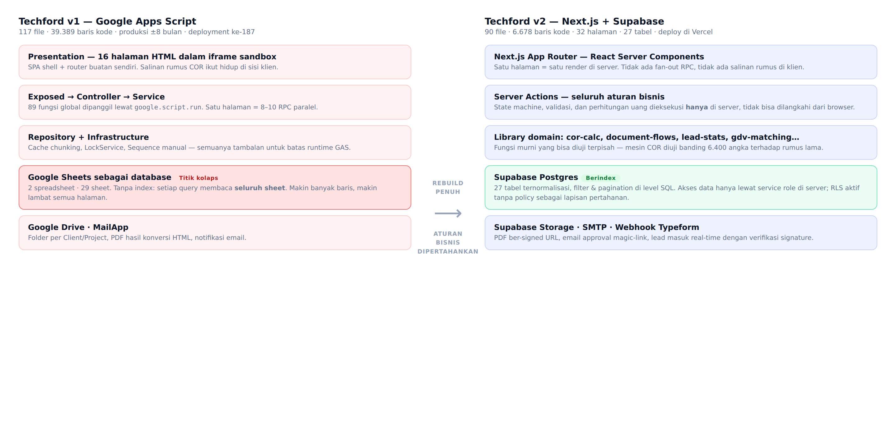
Browser tidak pernah memegang kunci basis data. Seluruh pembacaan dan penulisan terjadi di Server Component atau Server Action, memakai service role. Row Level Security tetap diaktifkan tanpa policy — sehingga kalaupun kunci publik bocor, tidak ada satu baris pun yang bisa dibaca dari luar.
Pola lama membuka 8–10 permintaan paralel per halaman. Sekarang halaman dirender utuh di server dalam satu siklus, dengan filter dan pagination dikerjakan basis data.
Login memakai tautan sekali-pakai ke surel kantor, lalu dicocokkan ke data karyawan. Akun baru cukup ditambahkan lewat antarmuka — tidak ada langkah manual di basis data, dan tidak bergantung pada izin organisasi yang di luar kendali tim.
Setiap modul memegang satu tahap nyata dalam pekerjaan tim. Nomor mengikuti urutan alur, bukan urutan pembangunan.
Hak akses tidak seragam antar modul, dan perbedaannya disengaja. Pada sebagian besar modul, peran Operation hanya bisa melihat. Namun khusus di Cost Monitoring, justru Consultant yang dibatasi — karena pencairan dana adalah pekerjaan tim operasional, bukan penjualan. Modul pengaturan hanya untuk Master Admin.
Setiap entitas punya nomor urut yang dihasilkan atomik di basis data, sehingga dua orang yang menekan tombol bersamaan tidak pernah mendapat nomor yang sama: INB26-00001 untuk lead, CL26-00001 klien, PRJ26-00001 proyek, DOC26-00001 dokumen, dan format gabungan bernomor romawi untuk Quotation.
Pintu masuk platform. Lead dari form publik mendarat langsung di sistem, lalu ditriase tim sebelum layak diangkat jadi klien.
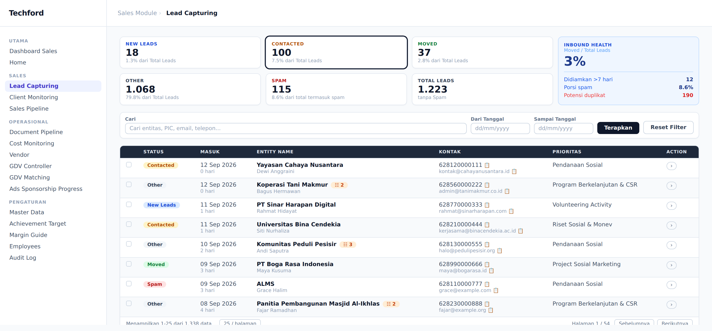
Form publik mengirim langsung ke platform begitu disubmit. Rantai lama yang melewati spreadsheet perantara dihapus dari jalur ini — sekaligus menghilangkan salah satu sumber beban yang memicu insiden.
Lead yang berbagi surel atau nomor telepon dengan lead lain ditandai otomatis beserta jumlahnya. Dari ±1.300 lead, ratusan di antaranya terindikasi duplikat — pekerjaan yang sebelumnya tidak pernah terlihat.
Memindahkan lead jadi klien adalah aksi khusus, bukan sekadar mengganti status. Setelah terjadi, lead terkunci permanen agar tidak ada dua sumber kebenaran untuk satu entitas yang sama.
Ratusan lead tidak mungkin ditriase satu per satu. Baris bisa dicentang lalu diubah statusnya sekaligus, termasuk menandai seluruh duplikat dari dalam panel detail.
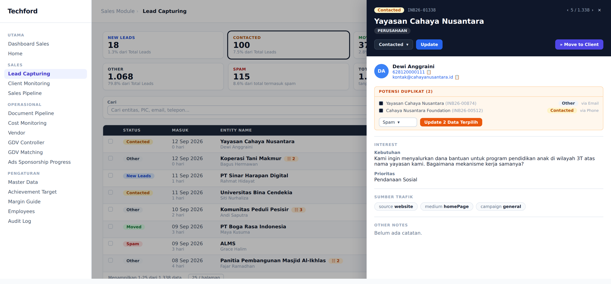
Pekerjaan triase bersifat repetitif: buka, baca, putuskan, lanjut. Karena itu detail lead tidak dibuka sebagai halaman terpisah, melainkan panel geser yang mempertahankan posisi di tabel. Penomoran 5 / 1.338 memberi tahu posisi, dan panah papan ketik memindahkannya tanpa menyentuh tetikus.
Nomor telepon dan surel bisa disalin satu klik — detail kecil yang menghemat langkah paling sering diulang sepanjang hari.
Bagian Potensi Duplikat tidak berhenti pada peringatan. Ia menampilkan lead-lead kembarannya, dari mana kecocokannya berasal (surel atau telepon), lalu menyediakan satu tombol untuk memperbarui status semuanya sekaligus.
Parameter kampanye dari tautan form tersimpan bersama leadnya, sehingga pertanyaan "lead ini datang dari kanal mana" bisa dijawab data, bukan ingatan.
Klien tidak boleh setengah jadi. Modul ini menegakkan enam syarat kelengkapan sebelum sebuah klien layak dibawa ke tahap proyek.
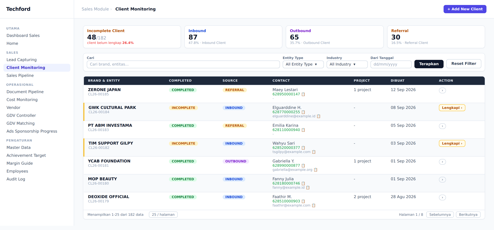
Nama brand, nama entitas legal, kantor pusat, tipe entitas, sumber klien, dan minimal satu PIC. Status kelengkapan dihitung ulang setiap saat, bukan disimpan — sehingga tidak pernah basi.
Kartu Incomplete Client mengubah pekerjaan rapi-rapi data menjadi angka yang bisa dikejar: berapa klien belum lengkap, dan berapa persen dari total.
Klien yang lahir dari lead inbound tidak bisa diubah sumbernya secara manual. Ini menjaga laporan komposisi Inbound / Outbound / Referral tetap jujur.
Setiap klien bisa punya beberapa PIC dengan satu yang ditandai utama, lengkap dengan jabatan, tombol salin kontak, dan pintasan percakapan langsung.
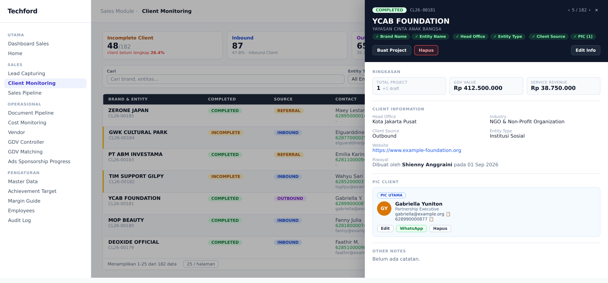
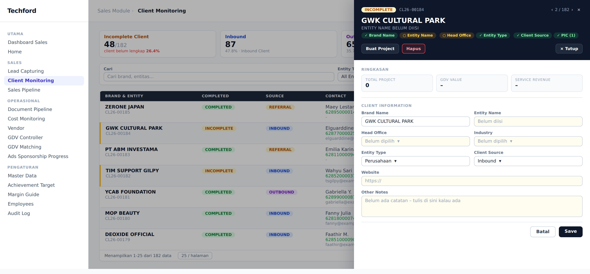
Memaksa semua kolom terisi di awal justru membuat orang menunda mencatat sama sekali. Karena itu klien cukup bermodal nama brand untuk mulai ada, lalu sistem yang mengingatkan sisanya — dan menahannya di gerbang sebelum jadi proyek. Pencatatan tetap terjadi, kualitas data tetap terjaga.
Delapan tipe dokumen dengan alur berbeda-beda, dijaga agar tidak ada status yang bisa dilompati — termasuk oleh orang yang tahu caranya.
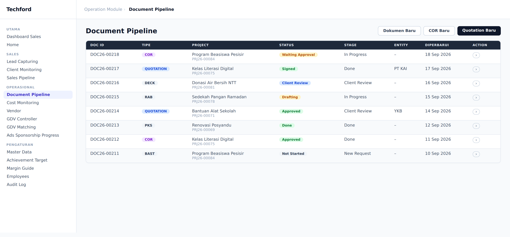
Setiap tipe dokumen punya urutan status linear. Sistem hanya menyediakan aksi "maju satu langkah" — tidak ada jalan untuk menetapkan status sembarang. Di platform lama sebagian aturan ini hanya dijaga di sisi browser; di versi baru setiap transisi diperiksa ulang di server tepat sebelum ditulis.
Dokumen tertentu yang mencapai tahap akhir mendorong proyeknya naik tahap dengan sendirinya. Kenaikan ini maju saja: proyek yang sudah Won tidak akan pernah turun karena ada dokumen baru dibuat, dan proyek berstatus Loss tidak pernah ikut terdorong.
Satu proyek hanya boleh punya satu dokumen untuk sebagian besar tipe — dijaga langsung oleh basis data lewat index unik parsial, bukan oleh pengecekan di kode yang bisa kalah balapan.
Quotation dikecualikan karena satu proyek bisa memerlukan penawaran dari dua entitas legal berbeda; COR dikecualikan karena bisa berdiri tanpa proyek.
Bagian paling kritis dari seluruh platform: menerjemahkan dana yang masuk menjadi angka yang benar-benar bisa dibelanjakan, lalu memisahkan margin rencana dari profit aktual.
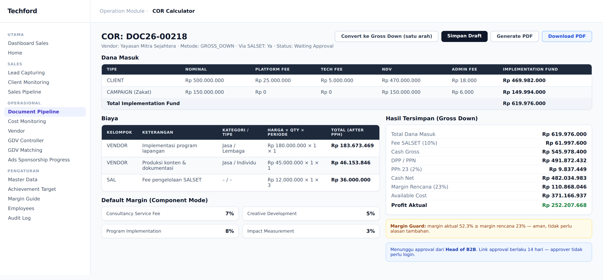
Dana masuk dikurangi platform fee dan tech fee, lalu biaya pencairan per kelipatan nominal. Bila disalurkan lewat lembaga mitra, fee lembaga dipotong lebih dulu. Sisanya melewati lapisan pajak — PPN untuk vendor terdaftar, PPh sesuai kategori dan bentuk badan penerima — sebelum akhirnya dibagi menjadi margin dan anggaran yang tersedia.
Urutan langkahnya tidak boleh ditukar. Menukar satu tahap saja menghasilkan angka yang tampak masuk akal tetapi salah.
Sistem membandingkan margin yang direncanakan dengan margin yang sebenarnya tersisa. Bila realisasinya di bawah rencana, permintaan persetujuan wajib disertai alasan tertulis. Perbandingan ini dihitung ulang di server saat pengajuan — bukan dipercaya dari angka yang kebetulan tampil di layar.
Rumus tidak cukup "kelihatan benar". Sebelum dipercaya, mesin perhitungan baru diuji berdampingan dengan rumus versi lama: 200 skenario acak dijalankan di kedua implementasi, lalu 32 keluaran angka per skenario dibandingkan satu per satu — total 6.400 perbandingan, tanpa satu pun selisih. Termasuk di dalamnya kasus khusus yang pernah jadi bug nyata di produksi: skenario tanpa vendor, di mana seluruh sisa dana pernah salah dibaca sebagai profit.
Klaim penjualan hanya berarti bila cocok dengan uang yang benar-benar masuk. Modul ini mempertemukan keduanya secara otomatis.
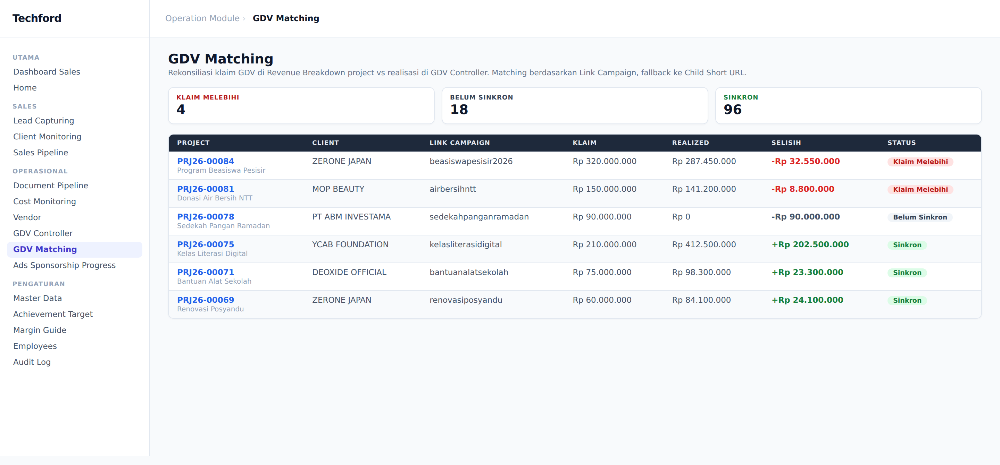
Pencocokan utama memakai tautan kampanye. Bila tidak ketemu, sistem mencoba tautan turunan sebagai alias. Pencocokan langsung selalu menang atas alias — supaya penambahan tautan turunan di kemudian hari tidak pernah bisa membajak tautan yang sudah punya arti sendiri.
Berkas ekspor dari perkakas pelaporan tidak selalu rapi. Pengurai yang dipakai mengenali penanda berkas tersembunyi, pengodean karakter non-standar, dan pemisah kolom yang berbeda — lalu, bila tetap gagal, menyebutkan persis nama kolom yang ia temukan agar penyebabnya langsung terlihat.
Kunci rekonsiliasi masih berupa teks yang diketik manusia, dengan normalisasi seadanya. Satu huruf salah ketik menghasilkan satu baris hantu sekaligus satu kampanye yang tampak belum diklaim. Perbaikan jangka panjangnya sudah dipetakan: jadikan kampanye entitas ber-ID dan pilih lewat pencarian, bukan ketik bebas.
Lapisan paling atas: pencapaian terhadap target, kondisi pipeline, dan daftar hal yang menunggu keputusan.
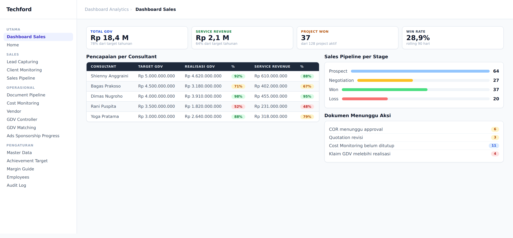
Target dapat ditetapkan di level departemen maupun per consultant. Angka pencapaian dibaca dari realisasi proyek, sehingga persentasenya selalu mencerminkan keadaan terbaru tanpa proses rekap terpisah.
Daftar dokumen yang menunggu aksi membuat pekerjaan yang tertahan terlihat lebih awal — COR menunggu persetujuan, Quotation yang direvisi, monitoring biaya yang belum ditutup, hingga klaim GDV yang melebihi realisasi.
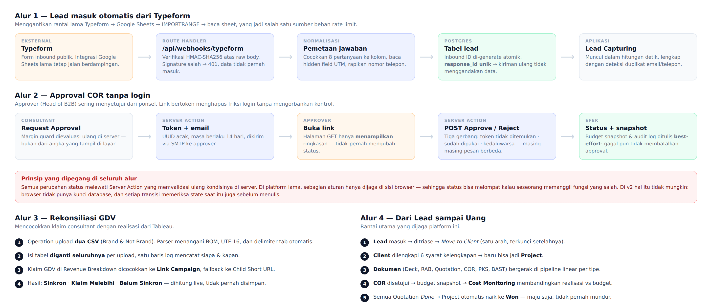
Mesin COR diuji berdampingan dengan implementasi lama pada 200 skenario acak dan 6.400 titik angka. Tanpa langkah ini, kesalahan perhitungan hanya akan ketahuan setelah uang berpindah.
Kunci basis data tidak pernah sampai ke browser; RLS tetap dinyalakan tanpa policy sebagai jaring pengaman kedua. Webhook publik memverifikasi tanda tangan kriptografis sebelum menyentuh data, dan menolak diam-diam bila tidak cocok.
Pengirim data eksternal bisa mengulang kiriman yang sama. Setiap kiriman membawa identitas unik yang disimpan, sehingga percobaan kedua diakui tanpa menggandakan baris.
PDF COR dan Quotation dirender di server lalu disimpan di penyimpanan privat. Tidak ada tautan permanen; setiap pengunduhan memakai tautan bertanda tangan yang kedaluwarsa dalam hitungan menit.
Approver membuka tautan bertoken berlaku 14 hari. Halaman yang dibuka hanya menampilkan ringkasan; perubahan status baru terjadi setelah tombol ditekan — sehingga tautan yang tidak sengaja terbuka tidak pernah menyetujui apa pun.
Penulisan audit log dan snapshot anggaran dijalankan secara best-effort. Bila salah satunya gagal, persetujuan tetap tercatat — kegagalan pencatatan tidak boleh berubah menjadi kegagalan bisnis.
Versi lama punya konstanta audit log yang tidak pernah dipakai satu baris kode pun. Di versi baru ia dibangun sungguhan dan dipasang di titik-titik bernilai tinggi: perubahan karyawan, pembuatan klien dan proyek, seluruh keputusan persetujuan, dan pencairan biaya.
Saat unggahan gagal, pesan galat menyebutkan nama-nama kolom yang benar-benar terbaca dari berkas. Tiga kegagalan berturut-turut di lapangan terselesaikan dalam hitungan menit karena penyebabnya langsung terbaca, bukan ditebak.
Rebuild ini dikerjakan tanpa lingkungan pengembangan lokal. Perangkat kerja terkunci kebijakan IT — tidak ada pemasangan perkakas, tidak ada terminal lokal. Seluruh pekerjaan berlangsung di lingkungan pengembangan berbasis peramban.
| Ukuran | v1 | v2 |
|---|---|---|
| Berkas kode | 117 | 90 |
| Baris kode | 39.389 | 6.678 |
| Penyimpanan | 29 sheet | 27 tabel |
| Permintaan per halaman | 8–10 | 1 |
Penyusutan baris kode bukan karena fitur dikurangi, melainkan karena sebagian besar kode lama adalah tambalan terhadap keterbatasan runtime — bukan aturan bisnis.
Seluruh platform berjalan di paket gratis: hosting, basis data, penyimpanan berkas, dan pengiriman surel. Tidak ada komitmen biaya baru untuk membuktikan bahwa arsitekturnya bekerja.
Penyimpanan berkas sempat diarahkan ke Google Drive, namun terhalang izin organisasi di luar kendali tim. Alih-alih menunggu, penyimpanan dipisah menjadi satu lapisan tersendiri sehingga backend-nya bisa ditukar kapan saja tanpa membongkar modul lain.
Migrasi data sengaja dijadwalkan paling akhir: membangun fitur di atas data kosong jauh lebih cepat diiterasi, dan memindahkan data hanya bermakna setelah bentuk akhirnya stabil.
Batas teknologi sebaiknya diperlakukan sebagai tanggal kedaluwarsa, bukan kejutan. Aturan bisnis yang benar-benar berharga adalah yang sudah melewati pemakaian nyata — dan karena itu wajib diuji ulang, bukan disalin dengan percaya. Aturan yang menyangkut uang harus dijaga di satu tempat saja: begitu rumusnya punya dua salinan, hanya soal waktu sebelum keduanya berbeda.
Seluruh tangkapan layar dalam dokumen ini dirender langsung dari komponen antarmuka Techford v2 menggunakan data contoh. Tidak ada nama, kontak, maupun nominal nyata dari lead, klien, atau mitra yang ditampilkan. Angka skala pemakaian (jumlah lead, klien, dan persentase) mencerminkan kondisi produksi platform versi pertama.